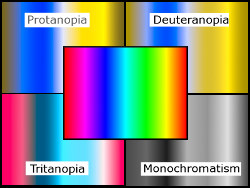

Accessibility
Topics
A WordPress theme should generate pages that everyone can use — including those who cannot see or use a mouse. The default WordPress theme generates content in a fairly accessible manner but, as a theme developer, you need to maintain these accessibility standards in your own theme. Although web accessibility can be a complex subject, it boils down to only four principles — that content must be:
- Perceivable
- Content must be available to all — no matter what user agent is employed or what senses the user lacks.
- Operable
- Users must be able to move around and operate the final site effectively — irrespective of whether they use a mouse or not.
- Understandable
- The content should be presented in a manner that supports understanding — including supporting the construction of a mental model of the site for screen reader users. Similarly, the site’s operation (navigation menus, links, forms etc.) should be easily understandable. Building a theme that incorporates known user behaviours (such as underlining links within the main content area) helps in this respect.
- Robust
- Content must be equally available across a wide range of user agents. Disabled users may employ a range of hardware and software solutions (commonly referred to as “assistive technology”) to allow them to access the Web – including screen reading & voice recognition software; braille readers and switches (single input devices).
A theme that is designed with these four principles in mind should facilitate the creation of an accessible web site.
Headings Headings
This shouldn’t need saying but headings are more than just big, bold, text. They are an essential way of breaking content down into logical sub-sections and may be relied upon by screen reader users. The JAWS screen reader (for example) can automatically create a list of headings from any given page. This allows its users to “scan” the page content in a similar way that a sighted person might scroll quickly down a page.
So it is important that heading tags are used logically rather than for any presentational or search engine optimisation (SEO) effect. A page containing twenty H1 headings might make for good, theoretical, SEO but it pretty much destroys the actual intended use of heading tags — to break a complex page down into sub-sections.
Obviously, the use of heading markup will vary from template to template but do try to keep the intended usage of headings in mind when building your theme’s files. One way to check your heading structure is to examine a page using the “View Document Outline” tool in Firefox’s Web Developer Toolbar under its Information menu.
Images Images
When possible, decorative images should be included using CSS. Where images are being added to your template markup, ensure that they incorporate an appropriate alt attribute. Decorative images within a theme might include:
- A banner or header image used alongside header text
- Images accompanying navigation text links
Non-decorative images within a theme might include:
- A banner or header image that replaces header text
- Images used in place of text for navigation
Alt text
- decorative images (null alt)
- Non-decorative images (appropriate alt – with at least 1 example)
To test whether your images within your template markup are informative or purely decorative, use a a simple alt text decision tree to check whether images are using the alt attribute appropriately.
Skip Links Skip Links
Skip links provide a mechanism that enables users to navigate directly to content or navigation on entering any given page. For example, where content is uppermost in the generated page markup with the menu markup lower down the page, a skip link might allow a user to “skip to navigation”. A “skip to content” link would be used in situations where the main navigation menu is uppermost in the page markup.
In designs with multiple menus and content area, multiple skip links can be used — eg:
- Skip to main navigation
- Skip to secondary navigation
- Skip to footer
These links may be positioned off screen initially using an appropriate CSS technique but should remain available to screen reader users and be visible on focus for sighted keyboard navigators.
Links Links
Link Text Link Text
Link text should describe the resource that it links to – even when the text is read out of context. Some assistive software scans a page for links and presents them to the user as a simple list. In these situations, all the links will be read out of context. So it is important the text used in a link is descriptive. Bare urls should never be used as links.
Avoid repetitive non-contextual text strings such as multiple “read more” links. Use something like:
<?php the_content( the_title('', '', false) . __('Continue reading', 'theme_text_domain') ); ?>Or, if you are generating the link outside of
the_content(), try something like:<?php printf( __('%1$s%2$s%3$s - read more', 'theme_text_domain'), '<span>', get_the_title(), '</span>');?>Note that, in each case, the unique part of the link (ie the post title) is being rendered first. This will further enhance accessibility in situations where links are read out of context. However, it is acceptable to hide the article title in a ‘read more’ link, as long as the method of hiding leaves the text available to screen readers — such as using absolute positioning or the CSS
text-indentproperty to move it off screen. In fact, such an approach may have positive benefits for other user groups by reducing visible screen clutter.Link Highlighting Link Highlighting
With the exception of Opera, the default focus highlighting in most modern browsers is pretty useless. This means that sighted keyboard navigators can quickly become “lost” once they tab into a page as they can no longer easily distinguish which link has the current focus.
Providing good
:focusand:activelink highlighting (both in navigation menus & elsewhere) is a very simple solution to this issue. In terms of “return on investment”, it greatly enhances sighted keyboard navigation with minimal effort on your part. It’s also very easy to test. Just put your mouse to one side and try tabbing around pages in your theme. If you get lost easily, so will others. Try replicating your current:hoverstyling and see if that helps.Link Underlining Link Underlining
Generally speaking, links should be underlined if they are outside navigation menus. Using color alone to distinguish links is insufficient as not everyone can perceive color. Underlining link means that users do not have to “mouse scrub” a page or play “guess which text is a link”. Also consider removing the underline as part of your hover/active/focus styling to, again, ensure that you are not relying on color alone.
Forms Forms
Form Markup Form Markup
Screen reader software may automatically toggle from a reading mode into an interactive, forms, mode as soon as a
<form>tag is encountered. In this forms mode, the software may not render text that is not explicitly associated with a form control, so any text that uses plain<p></p>tags may be ignored. In order to extract all important information, screen reader users may need to make two passes at the form to extract all of the visual information — once in forms mode and then again in a reading mode. This represents a significant accessibility barrier.Therefore, all forms — including the theme’s comment form — should ensure that all content within the
<form></form>tags is explicitly associated to a form control via the<label>tag, itsforattribute and anidattribute within the relevantinputtag. Avoid the use of plain text (e.g .inside<p></p>tags) within theformblock.To date, no issue has been reported when associating more than one
labelwith a single form control, so this “multiple labels” approach can be used, if required.On Form Submission On Form Submission
Post-submission responses — including any error messages — should always be perceivable. If possible, error messages should be generated at the top of the post-submission page so the user is immediately aware of any issues. Error messages should also make sense when read out of context.
Single Input Forms Single Input Forms
Forms that only have a single input (such as a standard search form) may position the associated input label off screen in a manner that ensure the label text is available to screen reader users.
Title Attributes Title Attributes
Do not rely on the
titleattribute to convey information. This attribute may not be available to all users (e.g. voice recognition (VR) software users). If information is important enough to be added, it’s important enough to be added as clear text so that everyone can see it.Readability Readability
Sometimes, the simplest thing you can do is to create a more readable page. Reading from a screen is much harder than reading a printed page. Crowded text, lots of images and too much information makes a page very difficult to read. Some general accessible design tips include:
- White space is your friend. Use it as a tool to reduce distraction.
- The CSS line-height property can increase the readability of paragraph text.
- The CSS letter-spacing property can increase the readability of headings and larger text.
- Position navigation elements in logical places and do not allow them to intrude into a page’s main content area.
- Make sure all fonts are large enough to be readable.
- If you are using custom fonts, embed them in your theme so that you are not relying on a 3rd party site for font delivery. If you really do need a 3rd party site for fonts, check that the text is still readable if the fonts are not available.
Color Color
 Approximately 10% of all internet users have problems seeing colors, especially those suffering from color blindness.
{kind=link}
The commonest form of color blindness affects the red/green spectrum. An affected user may perceive red, orange, yellow, and green as a single color with the rest of the color spectrum being perceived as blue, gradually changing to purple. In rarer forms of the condition, blue and pink colours may predominate or the sufferer may not be able to perceive any colors at all — with all colors reduced to shades of grey.
Whenever possible, use a color blindness simulator to check your design palette and avoid using color alone to distinguish important elements.
Contrasts Contrasts
Visitors with a visual impairment may prefer higher contrast pages whilst those with reading difficulties may need a lower contrast. Try to strike a reasonable balance and avoid extremes. Remember that contrast levels apply to images too when they contain text or are used in place of text.
Whenever possible, use a color contrast tool to check foreground/background contrast ratios across your theme. The minimum contrast ratio that you should aim for is 4.5:1. However, do try to avoid very contrast ratios as these may cause pixelation problems for those using screen magnifiers.
jQuery & JavaScript jQuery & JavaScript
You can still use jQuery in an accessible theme. Just don’t rely on it for any primary functionality. Test by viewing the theme’s output whilst JavaScript is disabled within the browser. Does the site still function effectively?
When implementing jQuery slideshows etc. check that they can be navigated by keyboard alone.
Using ARIA does offer some benefits in terms of future-proofing but, again, should not be relied upon at the present time. It is also with noting that incorporating ARIA attributes will cause markup validation failures, but it is more valuable to use ARIA than to aim for 100% validation.
In all things script-related, aim for progressive enhancement and graceful degradation.
Validation Validation
Validate your theme’s markup and CSS. Validation still represents the best way of ensuring that your theme’s pages are displayed to their best advantage across a whole range of web software. Most people would describe communication via a web site as “author -> viewer” but in reality, it’s actually “author -> machine(server) -> machine (browser) -> viewer”. Since the core of this is machine-machine communication, it makes sense to follow the relevant specifications (wherever possible) to maximise effective communication — irrespective of the final user agent being used to view a site.
That said, validation parsers are just that – dumb software. ARIA, for example, will cause validation failures but still represents the best way forward in creating an accessible theme. Always use your best judgement and, if in doubt, ask…
Accessibility Testing Tools Accessibility Testing Tools
A word of warning here. Unlike markup & CSS validators that operate using a strict binary “Right/Wrong” approach, accessibility validators have to try and audit complex scenarios. Consequently, their reports can include false positives and/or negatives. Again, do not be afraid to use your best judgement in these situations or ask around. There are plenty of accessibility-related resources — including forums — that can help.
Cross-Browser Testing Cross-Browser Testing
By all means, develop your theme in your preferred browser, but do remember to check its output in the current versions of Firefox, Chrome, Opera, and Safari. Those using Mac’s built-in screen reader, VoiceOver, may not have an option to use anything other than Safari. Opera is a popular browser choice amongst disabled users due to its many, inbuilt, accessibility features. Note that Internet Explorer is no longer supported by WordPress since 5.8 release.
In most cases, disabled users are perfectly capable of optimising their hardware & software to suit their specific needs. Your job — as a theme developer — is to ensure that page content is never scrambled, hidden or lost when viewed across a range of modern web browsers. Obviously, not all browsers will display a given page in exactly the same way but that is rarely an accessibility issue. Most modern browsers, however, can display valid pages in an effective and pleasing manner. Don’t aim for pixel perfection. That way lies madness! Instead aim for an attractive, effective, navigable site in each of your test browsers.
Things to Avoid Things to Avoid
Spawning New Windows or Tabs Spawning New Windows or Tabs
Spawning new windows breaks the browser ‘Back’ button leaving some sighted keyboard navigator stranded without any means of returning to the original page. For that reason, please avoid links and other elements that open a new window or tab. If you really, really, have to spawn a new window or tab, place a warning in clear text (preferably as part of the link or control text) so that users can make an informed choice.
Autoplay & Animations Autoplay & Animations
Avoid animated content if at all possible. In 1997, a cartoon on television in Japan sent over 700 children to the hospital, including about 500 who had seizures (citation). And do not play any sounds without the user’s express permission.
Autoplay isssues apply to:
- Sound — creates problems for screen reader users who may find their software’s output drowned out by the site’s audio.
- Animations (Flash or .gif images) — can trigger photo-epileptic seizures in some situations.
- Slideshows — may create issues for screen reader users (who are presented with continuously changing content) and sighted keyboard navigators (who may be unable to move past the slideshow).
- Other special effects — effects such as falling snow have been known to trigger photo-epileptic seizures.
If you absolutely must have moving or audio content that (1) starts automatically, (2) lasts more than five seconds, and (3) is presented in parallel with other content, ensure that there is an easily operable mechanism that pauses, stops, or hides it. Also ensure that the visual animation does not flash more than three times in any one second period.
Tabindexing Tabindexing
The tabindex attribute (with the exception of negative tabindex in specific circumstances) is to be avoided at all costs. As a theme developer, you are not the best person to determine where any one person wants to move to next on a site. Only the user can make that decision, so do not try to hijack their browser. As long as the natural tab order within a page is logical and can be easily perceived, most users are perfectly capable of sorting out their own navigational needs — thank you very much.
Accesskeys Accesskeys
Again — a nice idea in theory — but in reality, often a complete disaster when implemented. Apart from the fact that users have no information as to which shortcuts do what on a site, using anything other than numeric keys risks hijacking shortcut keys within the user’s own browsing software.
Make WordPress Accessible Make WordPress Accessible
Make WordPress Accessible is the official blog for the WordPress accessibility group – dedicated to improving accessibility in core WordPress and related projects. Our aim is to provide accessibility suggestions, feedback and assistance to WordPress core, theme and plugin developers.
Anyone can join in the discussions. You can also follow discussions via email or subscribe to feeds for both posts and comments. We would also be more than happy if you joined us on a more formal basis.
Resources Resources
General General
- W3C Web Accessibility Initiative ‘How To Meet WCAG2.0’ Quick Reference
- Make WordPress Accessible
- Accessites.org — general articles on web accessible design.
- Accessify Forum
- Evaluation, Repair, and Transformation Tools for Web Content Accessibility
Contrast & Color Testing Contrast & Color Testing
- Vischeck — Online color blindness simulator
- Contrast Analyser for Windows and Mac — free desktop tool with color blindness simulators.
- Sim Daltonism — a color blindness simulator for Mac OS X.
- Alternative Color Contrast Analyzer — provides a warning for high contrasts.
Toolbars Toolbars
- WAVE — Firefox accessibility evaluation tool.
- Firefox Accessibility Extension — check the use of structural markup in a page.
- Web Developer Toolbar for Firefox — adds various web developer tools to the browser.